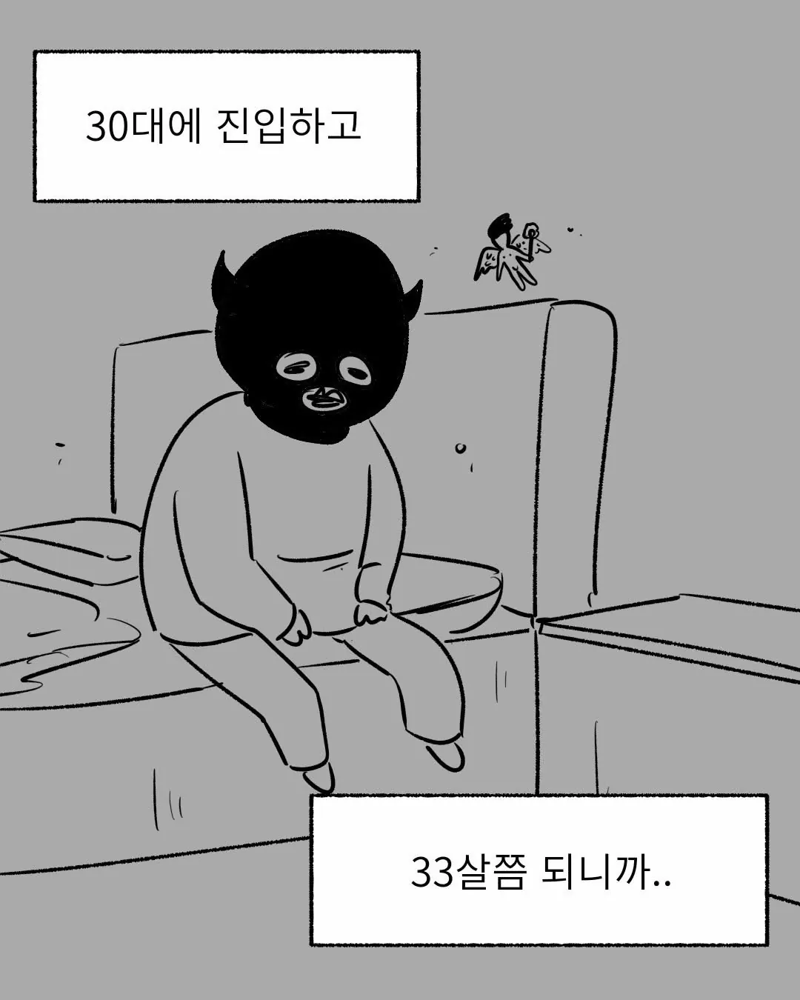
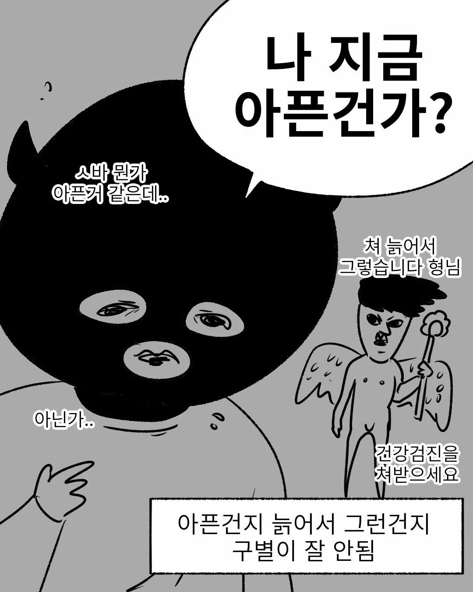

아픈가?...
아닌가?..
아픈 것 같기도하고...


아픈가?...
아닌가?..
아픈 것 같기도하고...
??? 그러면 나머지 50~60년을 아픈 몸으로 살아야 돼?
그래서 나이들고 노인분들이 아침마다 나무에 등 두들기고 공원에서 이상한 기구 돌리는게 괜한게 아님...
더 아픈 몸이지 그대로. 살려고 생각했어?
점점 더 다양한 곳이 고강도로 아파지는 몸으로 살아야됨
얘 완전 업계 탑 됐더라 개드립에서 군대만화 퍼가면 출저만 써달라는게 엇그제였는데
이상한 사람이랑 콜라보했었던가
그건 완전 옛날이고 지금은 포스타입인가 탑이던데 수익도 감히 말 못함
ㄹㅇ? 잘됐네 개그센스도 좋았으니까
막상 개드립에 안보이니까 안찾아보게됐었는데 보러가야겠다
ㅈㄴ 독보적이긴 했음 개그 ㅋㅋㅋ
뭐로 찾아야함? 안나오는데
땡큐 감사!!!
멤버십 공개인데 조회수가 1만에 근접이면 많이 벌긴 하겠네
저것도 네이버 도전만화에서 초반만 도전만화 올리고 뒤는 유료로 올린다고 욕 많이 먹었는데
군대 이야기라는게 하도 한국 남자들 사이에서 치트키 소재다보니 실패하기 어렵긴해 ㅋㅋ
심지어 창작만화도 아니고 썰만화라서 독자들이 더 친근감 가짐
달에 2천원인것도 생각 잘한게
요새 구독제에 대해서 사람들 심리적 저항감이 많이 내려간거같음
유튜브 응원하는 채널 멤버십도 그렇고 그림사이트도 그렇고
자기가 응원하고싶으면 그냥 다달이 천원~3천원정도는 쉽게 써주는 느낌
우리는 그를 모른다
아픈거 맞아
늙은게 곧 아픈거다
난 10대때부터 얼굴이 너무 아팠는데 아픈건가?
너 유료구독제로 전환된거야
좀 더 늙으면 제대로 알게 될 거 같은 느낌 ㅋㅋㅋ
의외로 거북목이나 디스크 이런거 있는줄도 모르고 사는 사람이 많음
진짜 웨이트 꼭하셈
난 30쯤부터 본격적으로 시작했는데 체력이 떨어진다는걸 못느끼겠더라
어렸을때부터 잔병치레도 많았고 의욕없고 기운없는애였는데
일단 운동하라 < 이거는 인생의 진리다
운동하면 더 피곤하던데
그거는 근육이 아직 적응을 못한거임 초기라서
그 스트레스를 정기적으로 계속 주어야 어느순간부터 피곤하지않고 일상으로 자리잡음
운동해도 피곤한건 똑같음
그냥 몸이 좋은 피곤한 사람이 되는거다
러닝도 아니고 웨이트?
몇년째 웨이트중인데 피곤이 더 쌓이면 쌓였지 빠지질않아서 카페인으로 연명중인데
차라리 유산소같은 러닝을 얘기한다면 믿을듯
그러게 웨이트보다는 적당한 유산소가 피로푸는데 더 도움될껀데
유산소는 별로인가영 ㅠㅠ
체력 증진은 유산소가 저 좋지
30 먹으니깐 밤샘 못하것던데
30대 초반에 3교대에 추가근무 뛰면서 이야 초봉이 이정도면 금방 집도 사겠는데? 했다가 얼굴 시커매진 뒤로 지금은 200따리 알바나 하면서 산다
나랑 비슷하네 ㅋㅋㅋ 난 주간직 찾아서 옴
난 교대 아직도 해...ㅠㅠ
출근 안하면 대부분 괜찮아짐..
ㄹㅇㅋㅋ
간밤에 날.. 누가 줘 패고 갔나..?
웨이트 + 인터벌 + 존2유산소 꼭해라 삶이 바뀐다
존2 트레드밀로함?
존2느느 기상하자마자 공원뜀
아침에 잘 안 섬
뉴 노멀
아 시발ㅋㅋㅋㅋㅋㅋㅋㅋㅋㅋㅋㅋㅋㅋㅋㅋㅋㅋㅋㅋㅋㅋㅋㅋㅋㅋㅋ